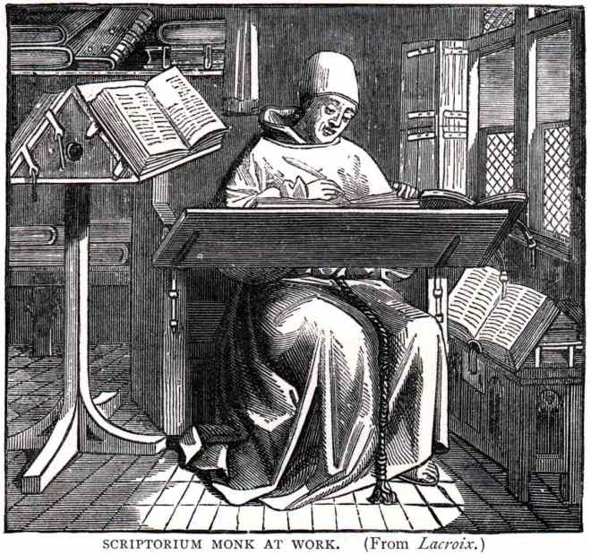

Stopka Serwisu
Serwis aktualny na dzień: 1 IX 2017 9:00
Po słowie:
Witaj, drogi użytkowniku wydaję mi się, że jestem ci winien kilka wyjaśnień. Kim jest ten mnich? To symbol wersji Alpha naszej strony. Będzie się jeszcze przwijał aż do wprowadzenia wersji Beta, kiedy to zastąpi go inny symbol. Kim ja jestem? Jestem Web Developerem tej strony, możliwe, że mnie spotkałeś. Jestem tu, byś już nie musiał korzystać z brzydkiej i niewydolnej strony v1. ani z często mającej problemy strony wordpress. Jeżeli masz jakieś uwagi koniecznie napisz do mnie: jan.wygnany@gmail.com.
Podziękowania: Chciałym podziękować Wojtkowi "Asterdrakowi" Zakrzewskiemu, za wsparcie i gotowość do pomocy a także za stworzenie strony 5 KDH Piorun, która stała się dla mnie podręcznikiem i ideałem.